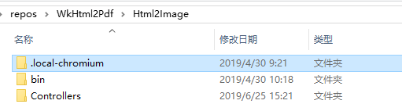
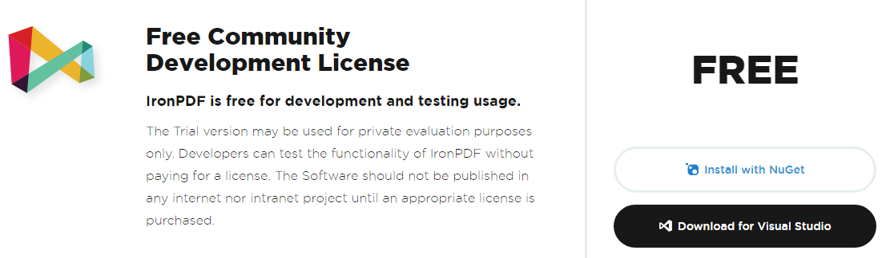

原文连接:https://www.cnblogs.com/hohoa/p/11087198.html
前段时间由于项目上的需求，要在.Net平台下实现把HTML内容生成图片或PDF文件的功能，特意在网上研究了几种方案，这里记录一下以备日后再次使用。当时想着找一种开发部署都比较清爽并且运行稳定的方案，但实际上两者同时满足基本不可能，只能做一个自己觉得合适的取舍，下面从两个维度（清爽指数和功能指数）逐一对比。
1. WebBrowser
这种方案在开发时不依赖任务外部程序集和nuget包，部署时也不需要安装额外的工具和服务，可以说是非常清爽了。它借助了WinForm下的WebBrowser控件实现HTML内容渲染，并把渲染结果绘制在Bitmap中，进而保存成图片或PDF文件。这种方案简单粗暴，是C#中最基础的实现方式，也是网上搜索结果最多的一种，下面看它的核心代码（从网上拼凑得来）：


1 class WebBrowserPage2Image
2 {
3 Bitmap m_Bitmap;
4
5 string m_Url;
6
7 public void Convert(string pageUrl, string fileName)
8 {
9 m_Url = pageUrl;
10 Thread m_thread = new Thread(new ThreadStart(HtmlDrawToBitmap));
11 m_thread.SetApartmentState(ApartmentState.STA);
12 m_thread.IsBackground = true;
13 m_thread.Start();
14 m_thread.Join();
15 MemoryStream stream = new MemoryStream();
16 m_Bitmap.Save(stream, System.Drawing.Imaging.ImageFormat.Png);
17 byte[] buff = stream.ToArray();
18 FileStream fs = new FileStream(fileName, FileMode.Create);
19 stream.WriteTo(fs);
20 stream.Dispose();
21 stream.Close();
22 fs.Close();
23 }
24
25 private void HtmlDrawToBitmap()
26 {
27 WebBrowser browser = new WebBrowser();
28 browser.ScrollBarsEnabled = false;
29 browser.Navigate(m_Url);
30 browser.DocumentCompleted += new WebBrowserDocumentCompletedEventHandler(delegate (object sender, WebBrowserDocumentCompletedEventArgs bdce)
31 {
32 if (browser.ReadyState == WebBrowserReadyState.Complete)
33 {
34 //myWebBrowser.Document.Body.Style = "zoom:180%";
35 Rectangle r = browser.Document.Body.ScrollRectangle;
36 browser.Height = r.Height;
37 browser.Width = r.Width;
38 m_Bitmap = new Bitmap(browser.Width, browser.Height);
39 browser.BringToFront();
40 browser.DrawToBitmap(m_Bitmap, new Rectangle() { Width = browser.Width, Height = browser.Height });
41 }
42 });
43 while (browser.ReadyState != WebBrowserReadyState.Complete)
44 {
45 Application.DoEvents();
46 }
47 browser.Dispose();
48 }
49 }虽然开发起来非常简洁，但是问题也很明显。WebBrowser是Winform下的一个组件，在非Winform项目中运行会出现不可知的异常，即使在Winform项目中，数据量比较大的时候依然会出现卡死的情况。我做过500次循环的测试，在执行到100多次的时候程序出现假死不动也无异常抛出。除此之外，生成的图片失真也比较严重，特殊字体和部分CSS样式无法渲染。总的来说，基本无法达到生成环境需求。
清爽指数：★★★★★ 功能指数：★
2. Wkhtmltox
这也是网上广泛流传的一个方案，wkhtmltox是一套开源的命令行工具，提供了图片和PDF的转换能力，它采用C++编写，使用Webkit作为渲染引擎，开源地址是https://github.com/wkhtmltopdf/wkhtmltopdf。使用方法就是在命令行工具中执行命令，例如：
wkhtmltopdf --grayscale https://www.baidu.com baidu.pdf如果要在.Net项目中使用的话，核心问题就是用程序唤起命令行，同时指定参数执行即可，类似于下面的代码：
System.Diagnostics.ProcessStartInfo Info = new System.Diagnostics.ProcessStartInfo();
Info.FileName = @"D:\dev\wkhtmltox\bin\wkhtmltopdf.exe";
Info.WindowStyle = System.Diagnostics.ProcessWindowStyle.Hidden;
Info.CreateNoWindow = true;
Info.Arguments = @"-q --orientation Landscape https://www.baidu.com D:\\baidu.pdf";
System.Diagnostics.Process proc = System.Diagnostics.Process.Start(Info);
proc.WaitForExit();
proc.Close();更多强大的功能例如加水印、分页、改样式等可以参考这篇文章：https://www.cnblogs.com/82xb/p/7837597.html
详细的参数说明可以查看文档：https://wkhtmltopdf.org/usage/wkhtmltopdf.txt
GitHub上有很多针对各个开发语言的封装，使用起来比较方便，唯一不爽的是部署项目前要先安装好这个工具。
清爽指数：★★★★ 功能指数：★★★★
3. PuppeteerSharp
这个就更厉害了，说到这个就不得不先介绍下Puppeteer，因为PuppeteerSharp正是从Puppeteer衍生而来。
Puppeteer是由谷歌开源的一个Node项目，它提供了和Chrome DevTools的通信能力，基本上我们能在Chrome实现的操作通过它的API都可以实现，强大到让你不敢相信。主要的应用有：
- 生成页面快照（图片、PDF）
- 爬虫，网站内容抓取
- 自动化测试（模拟键盘鼠标输入，表单提交，UI测试等）
- 网站性能分析（追踪，时间线捕获等）
开源地址是https://github.com/GoogleChrome/puppeteer
在Node项目中使用Puppeteer非常简单，先安装npm包：
npm i puppeteer安装过程可能会有点慢，因为在安装的时候会下载一个最近版本的Chromium（Mac下大概170M，Linux下大概282M，Windows下大概280M）。当然，如果你本地已经有一个Chromium，可以设置npm的全局配置PUPPETEER_SKIP_CHROMIUM_DOWNLOAD 跳过下载，然后在程序中手动指定Chromium的位置。
生成图片和PDF文件例子：
const puppeteer = require('puppeteer');
(async () => {
const browser = await puppeteer.launch();
const page = await browser.newPage();
await page.goto('https://www.baidu.com');
await page.screenshot({path: 'baidu.png'});
await page.pdf({path: 'baidu.pdf', format: 'A4'});
await browser.close();
})(); Puppeteer默认使用无界面模式（headless：true），如果想看到完整的浏览器界面，可以通过下面的设置开启：
const browser = await puppeteer.launch({headless: false});Puppeteer提供了丰富的选择器接口，可以轻松实现模拟输入和鼠标点击，例如：
await page.type('#index-kw', 'cnblogs');
await page.click('#index-bn');还支持指定使用设备：
const devices = require('puppeteer/DeviceDescriptors');
await page.emulate(devices['iPhone 8']);详细的API文档可以参考：https://github.com/GoogleChrome/puppeteer/blob/master/docs/api.md
Puppeteer确实非常强大，但由于它是一个Node包无法直接在C#项目中使用，那怎么办呢？好在有国外的大神把Puppeteer移植到了.Net平台，也就是PuppeteerSharp。
注意：PuppeteerSharp是基于NetStandard 2.0开发的，所以项目的平台最低版本要是.NET Framework 4.6.1和.NET Core 2.0。
首先通过nuget安装：
PM > Install-Package PuppeteerSharp导入命名空间：
using PuppeteerSharp;下面是我在ASP.NET Core 2.1下封装的测试方法：
[HttpPost, Route("page2img")]
public async Task<string> PageToImage(string url, int? width, int? height)
{
await new BrowserFetcher().DownloadAsync(BrowserFetcher.DefaultRevision);
var browser = await Puppeteer.LaunchAsync(new LaunchOptions
{
Headless = true,
//ExecutablePath="",
Args = new string[] { "--no-sandbox" }
});
var page = await browser.NewPageAsync();
bool fullPage = true;
if (width.HasValue && height.HasValue)
{
await page.SetViewportAsync(new ViewPortOptions
{
Width = width.Value,
Height = height.Value
});
fullPage = false;
}
await page.GoToAsync(System.Web.HttpUtility.UrlDecode(url));
string fileName = $"/Files/{Guid.NewGuid().ToString()}.png";
await page.ScreenshotAsync($"{AppDomain.CurrentDomain.BaseDirectory}{fileName}", new ScreenshotOptions { FullPage = fullPage });
return $"{Request.Host.ToString()}{fileName}";
}上面方法的第一行：
await new BrowserFetcher().DownloadAsync(BrowserFetcher.DefaultRevision);程序会判断本地环境有没有可用的Chromium，如果没有的话会自动下载一个默认版本的Chromium，这个过程可能会有点长，下载成功后会在项目根目录多一个这样的文件夹：

和前面说的一样，如果本地已经下载过Chromium，可以通过LaunchOptions的ExecutablePath字段指定一个目录。目前PuppeteerSharp在网上的资料还不是很多，但是得益于它与Puppeteer高度完整和相似的API，Puppeteer的文档对它基本都能适用。
总体来说，这个工具功能强大并且比较稳定（我在Windows和Linux下都测试通过），是一个不错的选择，但是由于它必须依赖于Chromium来运行，打包部署并不是很方便，我建议把它作为一个独立的web服务。
清爽指数：★★★ 功能指数：★★★★★
4. IronPdf
除了一些开源的项目和工具能提供HTML转图片或PDF的功能，很多商业软件公司也提供了这样的产品，IronPdf算是里面比较有代表性的一个。和其他收费软件不同的是，IronPdf有一个对开发者免费试用的license：

IronPdf的主要特性包括：
- 任何类型的HTML文件、代码片段、URL生成PDF
- PDF编辑
- 图片与PDF互转
- 支持HTML5和CSS3，支持响应式布局，支持JS脚本，丰富的配置选项
- 支持C#、VB、Webform、ASP.NET MVC、.NET CORE
我们可以在官网下载DLL文件直接引用到项目，也可以通过nuget来安装：
PM > Install-Package IronPdf 导入命名空间：
using IronPdf; 一个最简单的例子：
// Create a PDF from any existing web page
var Renderer = new IronPdf.HtmlToPdf();
Renderer.PrintOptions.EnableJavaScript = true;
Renderer.PrintOptions.PaperOrientation = IronPdf.PdfPrintOptions.PdfPaperOrientation.Landscape;
var PDF = Renderer.RenderUrlAsPdf("https://www.baidu.com");
PDF.SaveAs("baidu.pdf");
// This neat trick opens our PDF file so we can see the result
System.Diagnostics.Process.Start("baidu.pdf"); 添加水印：
pdf.WatermarkAllPages("<h2 style='color:red'>SAMPLE</h2>", PdfDocument.WaterMarkLocation.MiddleCenter, 50, -45, "https://www.baidu.com"); 用图片生成PDF文档：
// Select one or more images. This example selects all JPEG images in a specific folder.
var ImageFiles = Directory.EnumerateFiles(@"C:\project\assets").Where(f => f.EndsWith(".jpg") || f.EndsWith(".jpeg"));
// Convert the images to a PDF and save it.
ImageToPdfConverter.ImageToPdf(ImageFiles).SaveAs(@"C:\project\composite.pdf");更多高级功能和配置可以参考官网例子：https://ironpdf.com/examples/image-to-pdf/
清爽指数：★★★★ 功能指数：★★★★
写在最后
以上几种方式，都是我在本次实践中总结出来的，可能不是很全面，欢迎大家不吝补充。
遗憾的是，最终项目没有用上面的任何一种方式，而是抓取到HTML内容后用正则解析，然后用Bitmap一点一点重新画图生成图片文件保存。因为我要截取的页面内容很少，就是一个简单的电子处方笺，需求上也没有要求必须完全和原网页100%一致，绘图也算是一个不错的方案，但是缺点是一旦HTML结构或样式发生变化，那这套东西就失效了，好在这个不会轻易变更，也算是一个折中方案。